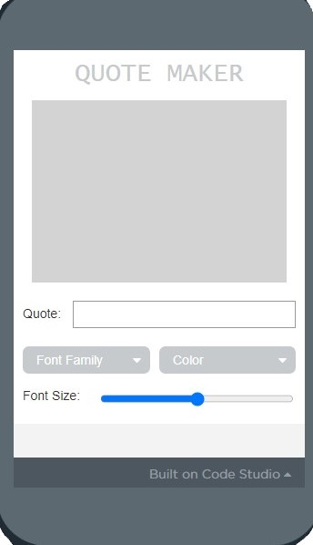
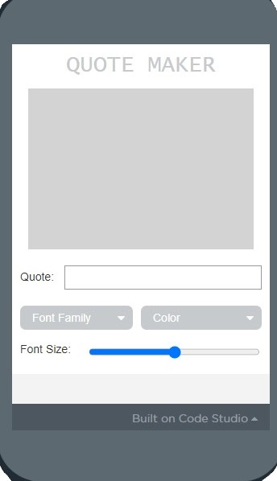

Lesson 1: Variables Explore
Summary: In Lesson #1, we learned information is stored and processed by programs. We were taught the definition of some terms in Java. We were taught the difference between a string and a number and what is a variable. We were taught about assignment operators and how to use them.
Question:
Summary: In Lesson #1, we learned information is stored and processed by programs. We were taught the definition of some terms in Java. We were taught the difference between a string and a number and what is a variable. We were taught about assignment operators and how to use them.
Question:
Lesson 2: Variables Investigate
Summary: We investigate and modify sample apps in the App Lab that use variables and learn common programming patterns with variables.
CFU: Explain in your own words the process of creating and updating a variable. How does the Counter Pattern with Event work?
The variable is updated when an on-event is performed during the counter-event pattern. The variable is named myVar with a value of 0. The following block of code states that myVar will equal the values in myVar plus the value of one. The initial value of myVar is 0, so 0 + 1 equals 0. Every time the code is run, the value in the variable will increase by one.
Summary: We investigate and modify sample apps in the App Lab that use variables and learn common programming patterns with variables.
CFU: Explain in your own words the process of creating and updating a variable. How does the Counter Pattern with Event work?
The variable is updated when an on-event is performed during the counter-event pattern. The variable is named myVar with a value of 0. The following block of code states that myVar will equal the values in myVar plus the value of one. The initial value of myVar is 0, so 0 + 1 equals 0. Every time the code is run, the value in the variable will increase by one.
Lesson 3: Variables Practice
Summary: In Lesson #3, we practiced programming and explored variables through a set of puzzles, debugging and apps.
Summary: In Lesson #3, we practiced programming and explored variables through a set of puzzles, debugging and apps.
-

Answer: 6 -
Answer: 10,5,10,5
Lesson 4: Variables Make
Summary:In Lesson#4, we practice making and debugging an app that uses variables and programming patterns with variables.
CFU: We debugged and coded a Photo Liker App
Summary:In Lesson#4, we practice making and debugging an app that uses variables and programming patterns with variables.
CFU: We debugged and coded a Photo Liker App
Lesson 5: Conditionals Explore
Summary: In Lesson #5, we discovered how computers make decisions. We defined terms such as boolean expressions, comparison operators, and logical operators. We made flowcharts simulating how a computer sees a boolean expression. We learned the symbols used for each type of operator and how to use them in a statement.
CFU: 1.
2. Can a computer evaluate an expression to something between true and false? Can you write an expression to deal with a "maybe" answer?
- The computer can evaluate an expression to something between true and false using the Boolean expression. The operation for the Boolean is the comparison operator. It tells you to stop and evaluate the Boolean value. A computer can't deal with a maybe answer.
Summary: In Lesson #5, we discovered how computers make decisions. We defined terms such as boolean expressions, comparison operators, and logical operators. We made flowcharts simulating how a computer sees a boolean expression. We learned the symbols used for each type of operator and how to use them in a statement.
CFU: 1.
|
|
2. Can a computer evaluate an expression to something between true and false? Can you write an expression to deal with a "maybe" answer?
- The computer can evaluate an expression to something between true and false using the Boolean expression. The operation for the Boolean is the comparison operator. It tells you to stop and evaluate the Boolean value. A computer can't deal with a maybe answer.
Lesson 6: Conditionals Investigate
Summary: We investigated and modified sample apps that use conditionals and learnt common programming patterns with conditionals.
CFU: When creating an if-else-if statement you should always make your first condition the most specific. Write a short paragraph responding to the questions below. - What does it mean to put the most specific case first? - Why is it important to put the most specific case first? What types of errors does it help avoid?
We start with the most specific case because it will assist determine how the other situations will be handled. Because the computer runs code from top to bottom and if the most selective element is somewhere other than the top, this would result in significant problems, it is crucial to start with the most specific scenario.
Summary: We investigated and modified sample apps that use conditionals and learnt common programming patterns with conditionals.
CFU: When creating an if-else-if statement you should always make your first condition the most specific. Write a short paragraph responding to the questions below. - What does it mean to put the most specific case first? - Why is it important to put the most specific case first? What types of errors does it help avoid?
We start with the most specific case because it will assist determine how the other situations will be handled. Because the computer runs code from top to bottom and if the most selective element is somewhere other than the top, this would result in significant problems, it is crucial to start with the most specific scenario.
Lesson 7: Conditionals Practice
Summary: In Lesson #7, we Practice programming with conditionals through a set of programming puzzles.
CFU:
Summary: In Lesson #7, we Practice programming with conditionals through a set of programming puzzles.
CFU:
-
Answer: "You Win!" -
Answer: 5
Lesson 8: Conditionals Make
Summary: We practiced making an app that uses conditionals and programming patterns with conditionals.
Summary: We practiced making an app that uses conditionals and programming patterns with conditionals.
Lesson 9: Functions Explore / Investigate
Summary: In Lesson#9 explored using functions to replace repeated code. Also we investigated and modified sample apps that use functions.
CFU: In your own words describe the benefits of creating functions in your code?
- Functions reduce the size of a program by calling and using the function at different places in the program. It creates neater and more accessible code so that debugging will be easier.
Summary: In Lesson#9 explored using functions to replace repeated code. Also we investigated and modified sample apps that use functions.
CFU: In your own words describe the benefits of creating functions in your code?
- Functions reduce the size of a program by calling and using the function at different places in the program. It creates neater and more accessible code so that debugging will be easier.
Lesson 10: Functions Practice
Summary: In Lesson #10, we practiced programming with functions through a set of programming puzzles.
CFU:
Answer: "School Day"
Summary: In Lesson #10, we practiced programming with functions through a set of programming puzzles.
CFU:
Answer: "School Day"
Lesson 11: Functions Make
Summary: We practiced making an app that uses functions and programming patterns with functions.

Summary: We practiced making an app that uses functions and programming patterns with functions.
